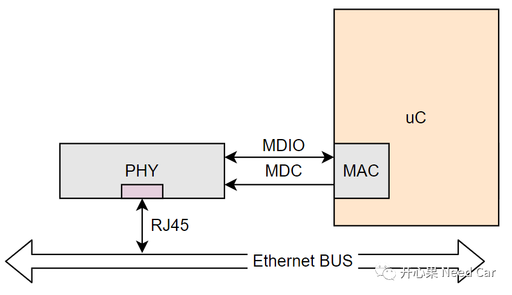
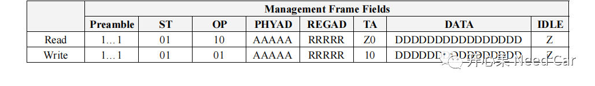
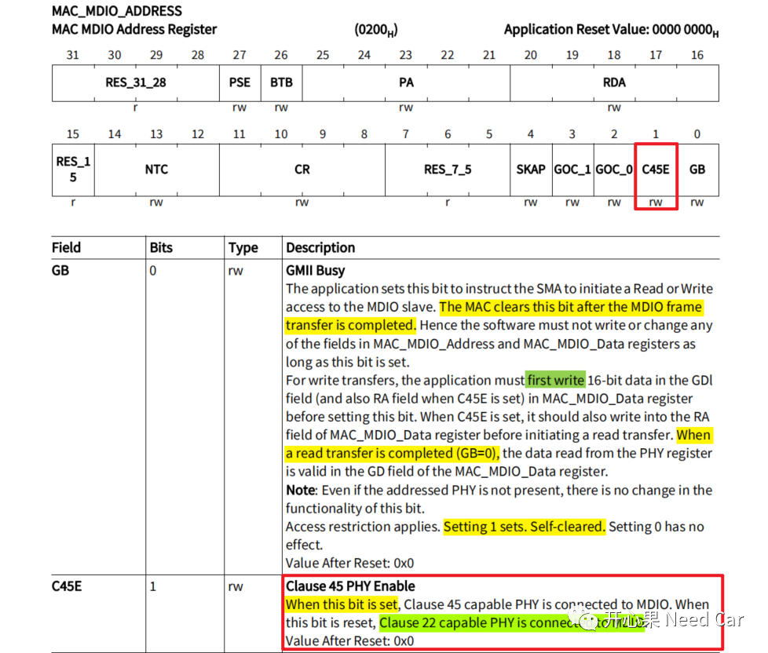
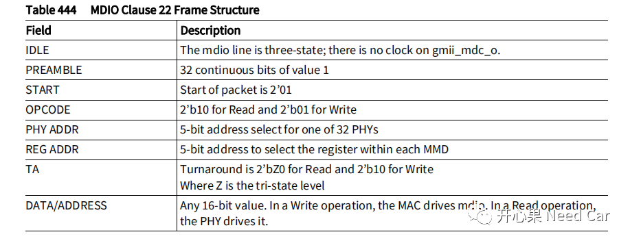
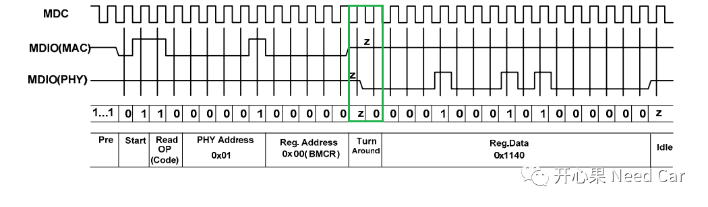
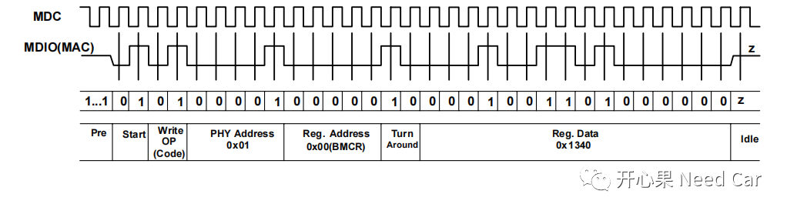
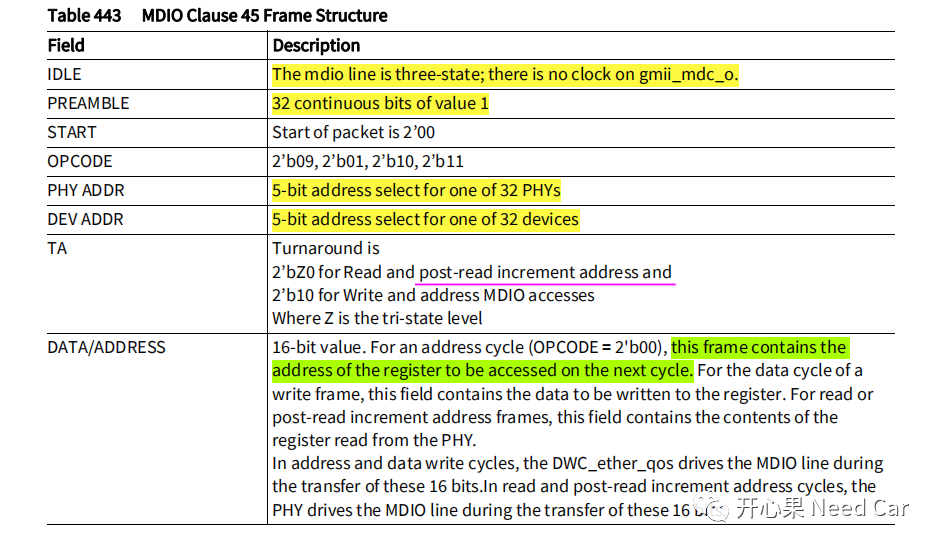

开心果 Need Car · 2022-10-20T09:50:00+08:00 · 微信原文
以太网的学习中，不说十万个为什么，100个为什么还是有的。本文，针对PHY（Physical）的Link Up，分享一下个人理解。
提示：基于英飞凌TC3xx讨论。
PHY的主要作用是数/模信号转换，功能等同于其他总线的Transceiver。所以，uC如果想发送/接收以太网数据，就需要依赖PHY（确切说是PHY芯片）。如果想让PHY按照预期的状态工作，uC就需要通过接口告诉PHY如何工作，这个接口是指MAC（Media Access Control）/PHY 接口。MAC/PHY的接口关系如下所示：

MAC通过接口可以访问PHY的内部寄存器，进而设置PHY的工作模式，以此实现PHY的Link Up。MAC访问PHY内部寄存器，主要通过MDC（Management Data Clock）和MDIO（Management Data Input Output）实现。手册中描述：PHY内部寄存器的访问，通过SMA（Station Management Agent）。而SMA中的操作信息来自MAC，所以，两种表达，本质是一个意思。
1、Clause 22/Clause 45
Clause 22或者Clause 45是什么呢？答：一种访问PHY内部寄存器的报文协议。既然是协议，就会有格式要求，Clause 22或者Clause 45格式的各个位域如下所示：



解释：
IDLE：空闲状态，此时MDIO没有时钟驱动；
PREAMBLE：前导码，由32个连续的"1"构成；
START：起始位域，2 Bit = 01B；
OPCODE：操作码，2 Bit，10B表述读取PHY寄存器操作，01B表示写PHY寄存器操作；
PHY ADDR：要访问的PHY地址，MAC最多可以访问32个PHY，编号0~31；
REG ADDR：PHY寄存器地址，最多可以访问32个PHY寄存器，这里表示要访问哪个PHY寄存器；
TA：Turn Around，反转位（2 Bit），当SMA读PHY寄存器时，在TA第一个Bit之前，由MAC（SMA）控制MDIO，请求目标PHY寄存器的信息；在TA第一个Bit之后，由PHY控制MDIO，输出对应PHY寄存器中的信息。这也是MDIO双向的原因，操作时序如下所示：

DATA：PHY寄存器中的数据信息。


2、PHY Link状态的软件实现
在软件层面，程序初始化或者Reset以后，需要重新初始化PHY，通过读取PHY寄存器的Link位域确定PHY的Link状态，eg：RTL8211F(I) BMSR (Basic Mode Status Register, Address 0x01)寄存器，Bit2（Link Status）指示PHY的Link状态。代码实现示意所示：
boolean PHY_link_Status(void){boolean linkEstablished = FALSE;uint32 value;do{IfxGeth_phy_Clause22_readMDIORegister(0, PH_BMSR, &value);linkEstablished = ((value & (1 << 2)) != 0) ? TRUE : FALSE;} while (!linkEstablished);return linkEstablished;}
往期精彩回顾